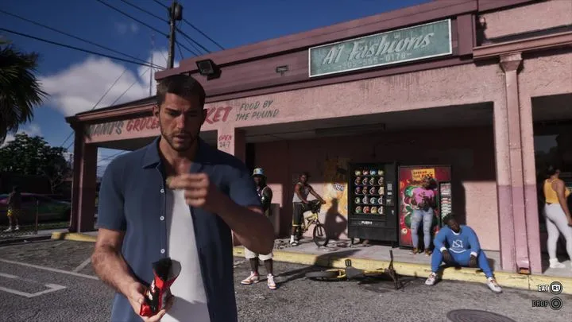
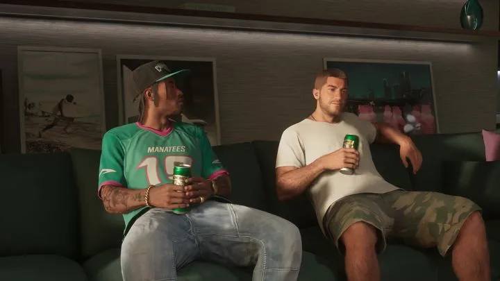
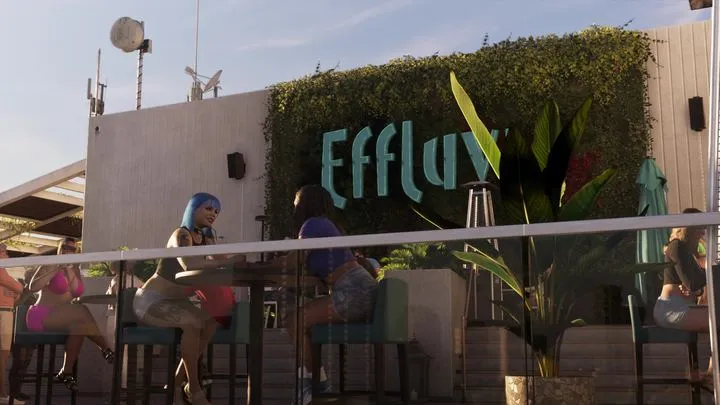
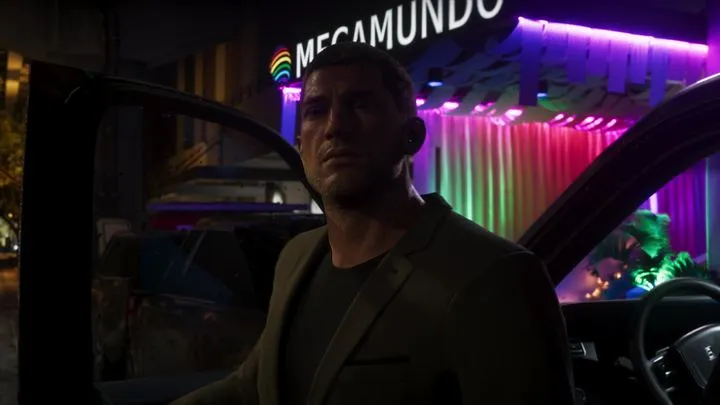
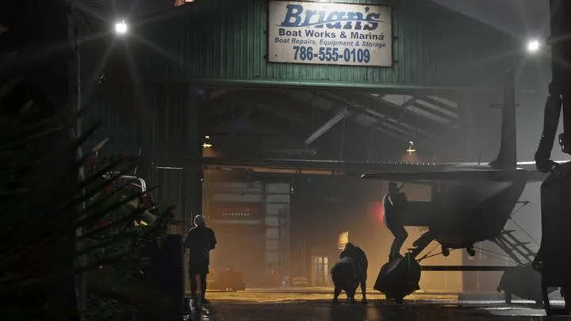
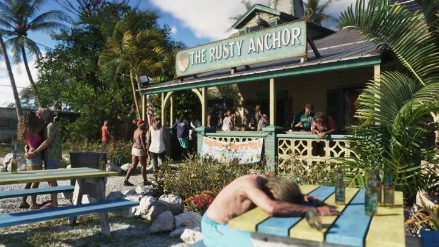

Rockstar почти никогда не ставит в кадр настоящие бренды — всё от банков до пива своё: пародии или собственные марки серии. Здесь всё, что уже читается на вывесках, этикетках и экранах. Как бренды соотносятся с реальностью — в разделе сравнений «Бренды».
22 в разделе: Марки и товары · Заведения. Нажмите на карточку — откроется страница с кадрами, таймкодами и подробностями.
Марки и товары 13

Вымышленный автопроизводитель серии GTA. В GTA 6 — пикап Caracara у дома Брайана Хедера.

Марка серии GTA. В GTA 6 — два подвесных мотора Dinka 350 на рыболовном катере.
Надпись на борту рыболовного катера: «LUREPREDATOR L35P». Lure — блесна, predator — хищник.

При подборе оружия на экране появляется «Moreland 850 Shotgun» — у оружия в GTA 6 есть названия моделей.

Меню холодильника: пиво Logger и Lavazas, смузи Blitz Berry и Blitz Green. Logger знаком по GTA 4 и GTA 5.
Магнит Fleeca Bank и наклейка Lombank на холодильнике — банки из GTA 5. Значит, Леонида живёт в той же вселенной.
Марка микроволновки на той же кухне.

Автоматы с газировкой FIZZAZZ у магазина в Вайс-Сити.

Зелёная банка пива Benedict в руках у друзей на диване.

Вымышленный телеканал серии GTA: «живая» съёмка с вертолёта и кричащие заголовки.

Реклама на баннере за самолётом над пляжем: «Why sixtynine when you can nine 1 nine».
Бирюзово-розовое джерси команды Manatees с номером 15.

Сахарный завод в Амброзии.
Заведения 9

Бар на крыше с зелёной стеной из растений: здесь проходит свидание героев.

Ночной клуб с неоновой вывеской Megamundo.

Стрип-клуб Буби Айка, легенды улиц Вайс-Сити.

Лейбл Буби Айка и Дре’Куана Приста; на нём записывается дуэт Real Dimez.

Лодочная мастерская и стоянка Брайана Хедера. На вывеске — телефон 786-555-0109.

Бар в Leonida Keys: столики во дворе, гирлянды и посетитель, уснувший за столом.
Торговый ряд в Вайс-Сити: вывеска A1 Fashions с телефоном 305-555-0178 и продуктовый Mami’s Grocery Market — «Food by…

Кубинский магазин в Амброзии с огромной фреской-орланом на стене.

Спортзал, где Лусия жмёт штангу.
Кадры: Rockstar Games (трейлеры 1–3, «Расширенный показ», официальные скриншоты). Источник у каждой карточки указан над названием. Обновлено: 24 октября 2026.
Каждый день — одно сравнение: кадр игры рядом с реальным фото. Подписывайтесь:
YouTubeInstagramTikTokДругие разделы справочника: Персонажи · Транспорт · Занятия · Механики · Животные · Регионы · Об игре